Honda Vezel
≈ 1 660 000 ₽
Кроссовер поколения RV из Японии. Сравните бензиновую и гибридную версии по приводу, пробегу и оснащению.
Сравните 40 моделей из Китая, Южной Кореи, Японии и Кыргызстана по модельному году, мощности, типу двигателя и ориентировочной цене. Изображения служат иллюстрациями. Что входит в цену под ключ.
40 моделей
По этим фильтрам ничего не найдено. Попробуйте другую модель или страну.
≈ 1 660 000 ₽
Кроссовер поколения RV из Японии. Сравните бензиновую и гибридную версии по приводу, пробегу и оснащению.
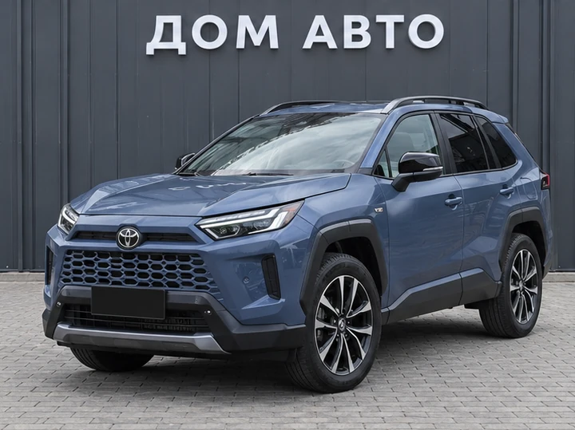
Модификация · 2.5 HEV E-Four
≈ 4 510 000 ₽
Пятиместный кроссовер. При выборе сравните двигатель, привод и комплектацию конкретного RAV4.

≈ 1 990 000 ₽
Компактный седан с отдельным багажником. Для ежедневных поездок сравните оснащение салона и состояние машины.

≈ 1 730 000 ₽
Пятиместный кроссовер с мотором 1.4 Turbo и автоматом. Если машина нужна для семьи, посмотрите, сколько места на втором ряду.

Модификация · 1.2 e-POWER 2WD
≈ 1 190 000 ₽
Городской хэтчбек E13 с гибридной установкой e-POWER. Уточните оснащение и пробег выбранного Note.

≈ 4 350 000 ₽
Кроссовер шестого поколения. В расчёте версия с мотором 1.5 Turbo и просторным вторым рядом.

≈ 2 600 000 ₽
Кроссовер пятого поколения с вместительным вторым рядом. Перед выбором сравните привод и оснащение.

≈ 1 520 000 ₽
Компактный автомобиль с мотором 1.5 и вариатором. Подходит для поиска машины на ежедневные городские поездки.
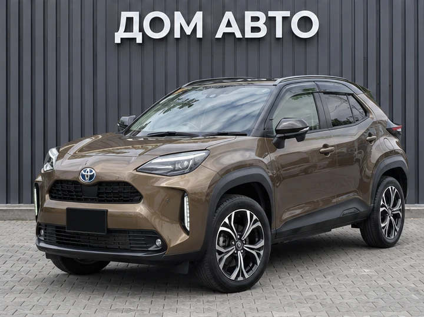
≈ 1 650 000 ₽
Компактный кроссовер на базе Yaris. Можно сравнить бензиновый и гибридный варианты.

≈ 6 390 000 ₽
Длиннобазный лифтбек китайского рынка с мотором 2.0 Turbo. Уточните нужные опции по выбранной комплектации.
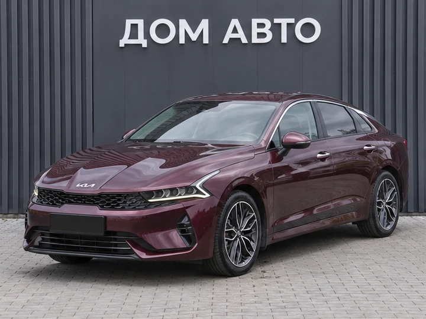
≈ 2 370 000 ₽
Среднеразмерный седан с мотором 2.0 и автоматом. При подборе обратите внимание на состояние кузова и оснащение салона.
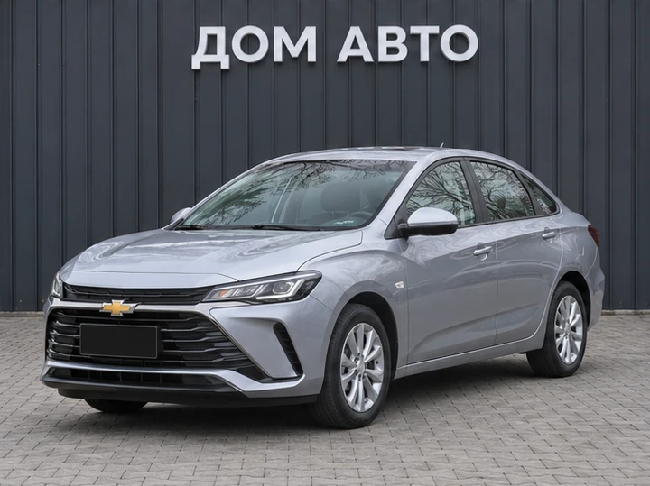
≈ 1 460 000 ₽
Седан с атмосферным мотором 1.5 и автоматом. Спокойный вариант для повседневных поездок.

Модификация · 1.5 Hybrid B 2WD
≈ 1 270 000 ₽
Пятидверный гибридный хэтчбек второго поколения. Уточните пробег, комплектацию и доступные материалы осмотра.
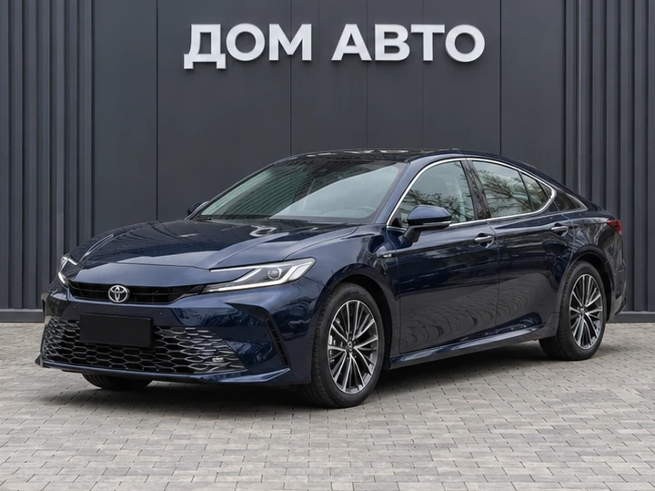
Модификация · 2.5 Hybrid FWD (США)
≈ 4 320 000 ₽
Седан XV80 с просторным задним рядом. Можно сравнить гибридные комплектации по оснащению и цене.

≈ 2 180 000 ₽
Компактный кроссовер первого поколения после рестайлинга. В карточке вариант с мотором 2.0 и вариатором.
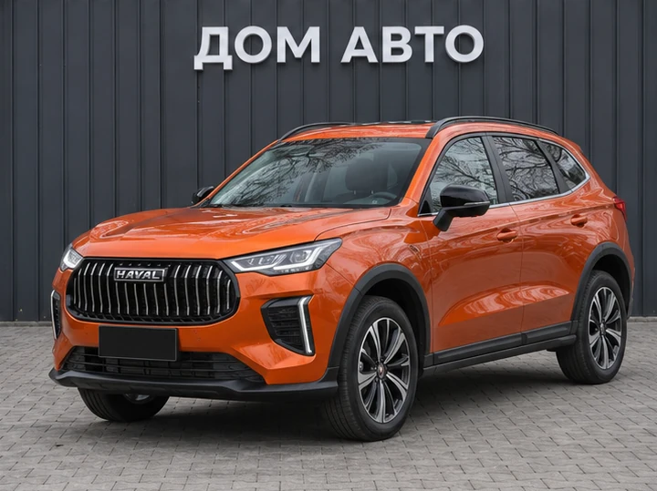
≈ 1 590 000 ₽
Компактный кроссовер с мотором 1.5 Turbo и коробкой DCT. Уточните комплектацию по конкретному автомобилю.
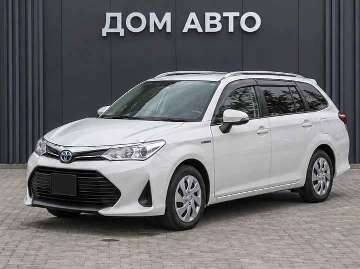
≈ 1 310 000 ₽
Универсал с длинным багажным отделением. Рассмотрите гибридные версии, если важны и расход, и место для вещей.

≈ 4 920 000 ₽
Длиннобазный Tiguan китайского рынка. Расчёт относится к версии с двигателем 2.0 Turbo.

≈ 1 750 000 ₽
Городской кроссовер с мотором 1.6 и вариатором. Уточните пробег, комплектацию и нужные опции.

≈ 2 160 000 ₽
Кроссовер с мотором 1.4 Turbo и DSG. При выборе оцените посадку, багажник и оснащение салона.

≈ 1 460 000 ₽
Компактный минивэн со сдвижными дверями. Для семейных поездок стоит проверить конфигурацию сидений и место для багажа.

Модификация · 1.5 TSI mHEV
≈ 4 490 000 ₽
Кроссовер второго поколения. Если нужен третий ряд, проверьте комплектации с подходящей конфигурацией салона.
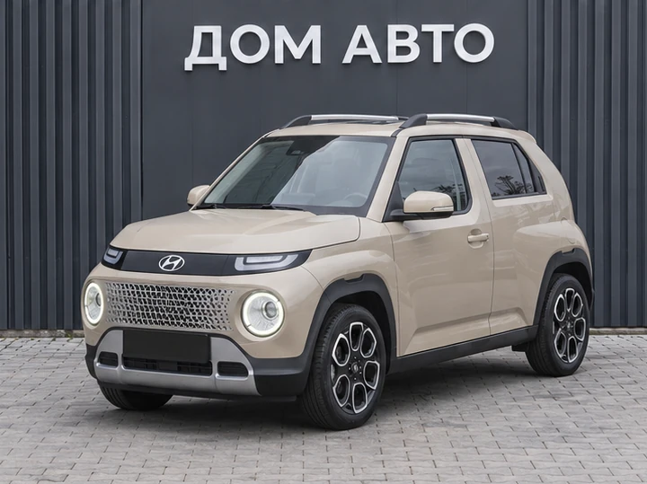
≈ 1 630 000 ₽
Компактная модель с высокой посадкой и литровым турбомотором. Подходит для поиска небольшого автомобиля для города.
≈ 2 170 000 ₽
Пятиместный кроссовер первого поколения. В расчёте версия с двигателем 1.4 Turbo и коробкой DCT.

≈ 1 170 000 ₽
Городской хэтчбек с коротким кузовом. При выборе сравните пробег и оснащение выбранных машин.
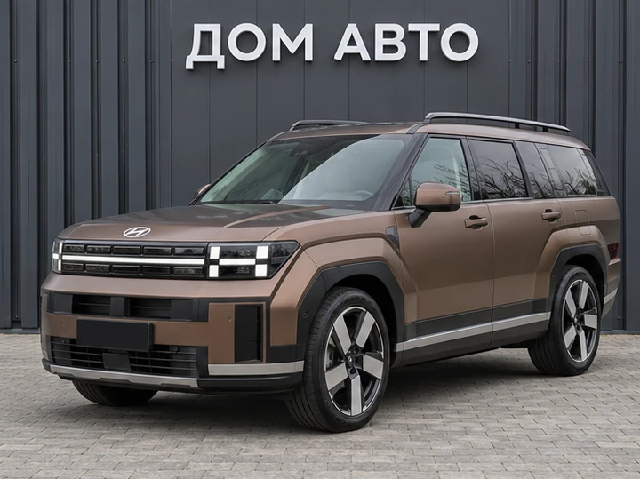
≈ 5 050 000 ₽
Кроссовер поколения MX5 с высоким кузовом и широким багажником. Оцените конфигурацию салона под свои поездки.

≈ 2 110 000 ₽
Седан поколения CN7. По корейским объявлениям модель можно найти под названием Hyundai Avante.
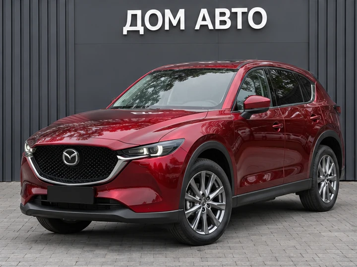
≈ 2 350 000 ₽
Кроссовер с атмосферным бензиновым мотором 2.0 и автоматом. Уточните привод, оснащение и состояние кузова.
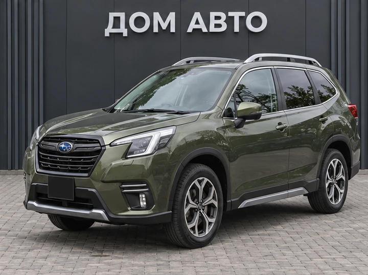
≈ 3 100 000 ₽
Forester поколения SK с полным приводом и высокой посадкой. При выборе сравните комплектации и историю машины.

≈ 5 200 000 ₽
Семейный кроссовер XU70 с тремя рядами. Перед подбором стоит оценить место для багажа при поднятом третьем ряду.
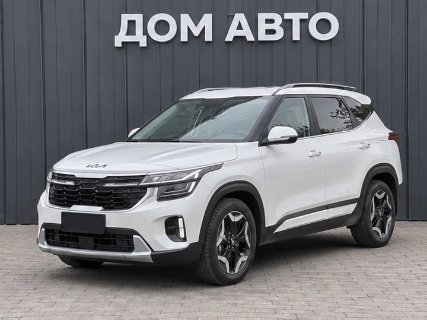
≈ 2 250 000 ₽
Компактный кроссовер после рестайлинга. Сравните версии по приводу, камерам и оснащению салона.
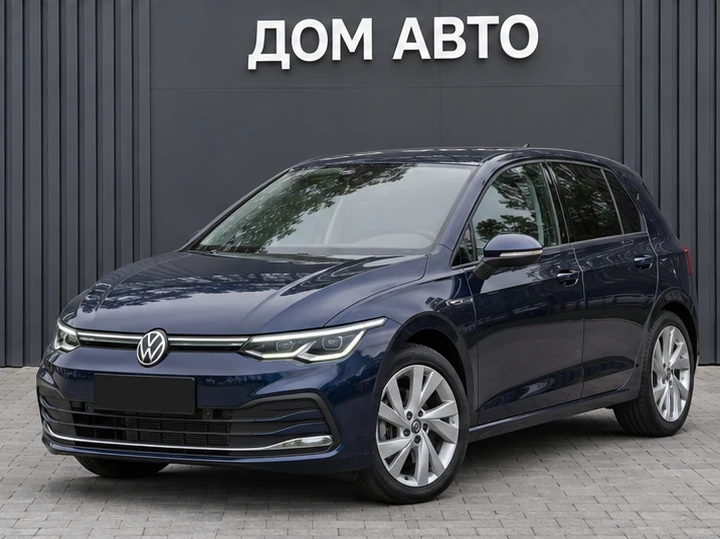
≈ 2 120 000 ₽
Пятидверный Golf восьмого поколения. В расчёте версия с двигателем 1.4 Turbo и DSG.
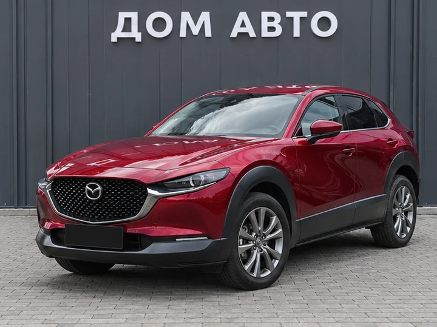
≈ 1 950 000 ₽
Компактный кроссовер с низкой линией крыши. Если машина нужна семье, при выборе полезно оценить задний ряд и багажник.

≈ 5 750 000 ₽
Кроссовер второго поколения с атмосферным мотором 2.5. По выбранному авто сверьте привод и опции.
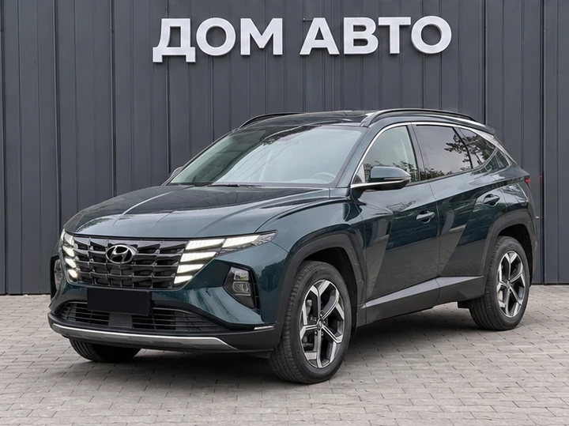
≈ 2 770 000 ₽
Кроссовер поколения NX4 с широким багажным проёмом и просторным вторым рядом. Уточните конкретную комплектацию.
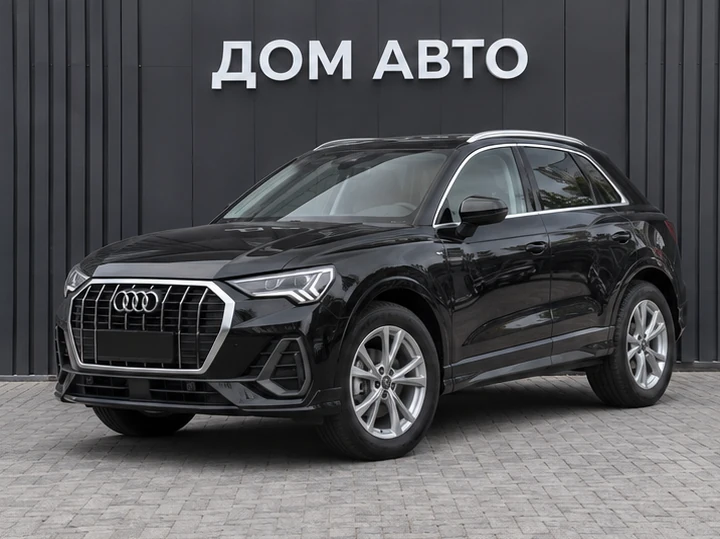
≈ 2 240 000 ₽
Кроссовер поколения F3 с мотором 1.4 Turbo и коробкой DCT. При выборе сравните оснащение и состояние машины.

≈ 1 920 000 ₽
Трёхдверный рамный внедорожник с мотором 1.5 и подключаемым полным приводом. Уточните состояние конкретной машины.
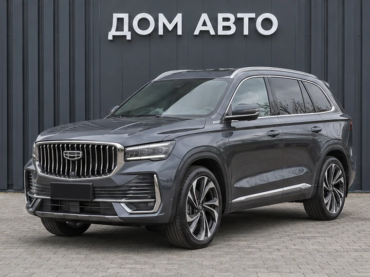
≈ 3 950 000 ₽
Среднеразмерный кроссовер с мотором 2.0 Turbo и автоматом. Перед выбором сравните опции и состояние.

≈ 3 600 000 ₽
Кроссовер поколения MQ4. Если нужен третий ряд, проверьте число мест и оснащение выбранной версии.

≈ 1 250 000 ₽
Седан с мотором 1.5 и вариатором для повседневных поездок. Уточните оснащение по выбранной версии.